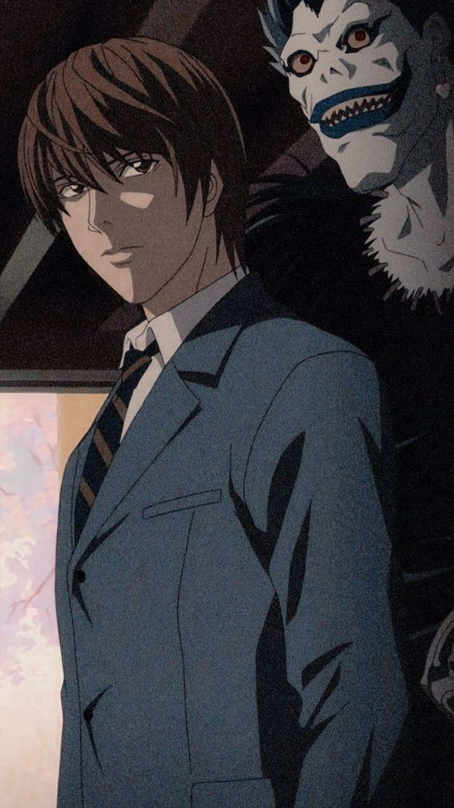

<link href="style.css" rel="stylesheet" type="text/css" />
<link rel="stylesheet" href="https://cdnjs.cloudflare.com/ajax/libs/font-awesome/5.15.3/css/all.min.css">

<header>
 <div class="topo">
   <h1>Giovana Nogueira Oliveira</h1>
   <ul>
     <li><a href="index.html">Home</a></li>
     <li><a href="formacao.html">Formação</a></li>
     <li><a href="about.html">Sobre</a></li>
     <li><a href="experience.html">Faculdade</a></li>
     <li><a href="contact.html">Contato</a></li>
   </ul>
 </div>
</header>


<nav class="passatempos">
  <h1>Meus Passatempos e Interesses Pessoais</h1>
  <div class="icons">
    <div><i class="fas fa-music fa-4x"></i><p>Música</p></div>
    <div><i class="fas fa-tv fa-4x tv1"></i><p>Filmes/Séries</p></div>
    <div><i class="fas fa-tv fa-4x"></i><p>Animes</p></div>
    <div><i class="fas fa-graduation-cap fa-4x apr"></i><p>Aprender Coisas Novas</p></div>
    <div><i class="fas fa-book fa-4x"></i><p>Livros</p></div>   
  </div>
  <section class="musica">
    <div class="zero">
    <div class="um"></div>
    <div class="um2">
       <h1>Música</h1>
      <p>Ouvir música é algo que faço diariamente, gosto de vários gêneros musicais, tais como pop, mpb e indie. 
     </p> 
     <div class="um4">
       
       
       
       
     </div>
    </div>   
    </div>
  </section>
  <section class="anime">
    <h1>Animes</h1>
    <div class="anime2">
      <div class="anime1">
      
      
      
      </div>
      <p>Animes do gênero shounen, drama, ação, e seinen tais como Naruto, Attack on Titan e Death Note são meus preferidos.</p>
    </div>
  </section>
  
  <section class="filmes">
    <h1>Filmes/Séries</h1>
    <div class="filmes2">
      <p>Filmes e séries de ficção científica, comédia, romance e mistério me despertam interesse.
Meus preferidos:</p>
    <ul>
      <li>Interstellar</li>
      <li>The Big Bang Theory</li>
      <li>How I Met Your Mother</li>
      <li>The Office</li>
      <li>Dark</li>
      <li>Senhor dos Anéis</li>
    </ul>
    <div class="filmes1">
        
      
      
      </div>
    </div>
  </section>
  <section class="livros">
    <h1>Livros</h1>
    <div class="livros2">
      <p>Me interesso em leituras onde posso me imaginar em realidades diferentes e/ou possa conhecer fatos e curiosidades sobre o mundo e a vida, tais como livros de aventura, ficção e fantasia.
Alguns dos meus preferidos:</p>
      <div class="livros1">
        
      
      
      </div>
    </div>
  </section>
  <section class="acn">
    <h1>Aprender coisas novas</h1>
     <div class="acn2">
       <p>Procuro sempre aprender/conhecer coisas que estão em minha área de interesse, tais como assuntos relacionados a tecnologia, filosofia e astronomia.</p>
      <div class="acn1">
        
      
      
      </div>
  </section>
</nav>
<footer>
    <p> © 2023 Giovana Nogueira Oliveira</p>
  </footer>